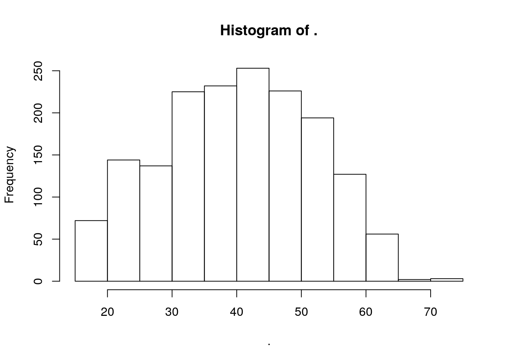

In this chapter, we want to introduce you to the possibly most popular technique/tool of modern statistics, Linear Regression.
After having recoded your variables as in the datamanagement section, you will need to make some further preparatory steps before we can begin the regression.
SOEP_data %>% str()## 'data.frame': 14481 obs. of 8 variables:
## $ netinc : int NA NA 800 NA 3600 NA NA NA NA NA ...
## $ alter : num 52 NA 55 25 57 81 70 84 78 48 ...
## $ sex : Factor w/ 2 levels "maennlich","weiblich": 2 1 2 1 1 1 2 2 2 1 ...
## $ contract: num 37 NA 38.5 NA 40 NA NA NA NA NA ...
## $ actual : num 37 NA 41.5 NA 42 NA NA NA NA NA ...
## $ trust : int 3 NA 2 2 2 NA 2 2 3 3 ...
## $ rely : int 2 NA 3 3 4 NA 4 3 2 2 ...
## $ inc_kat : chr NA NA "Q2" NA ...Our dataset contains 14481 observations/cases and (in the reduced form) 8 variables. We immediately see that many variables contain a high number of so called NAs (standing for Non-attitude/No Answer/…).
Lets look at the first 10 rows:
SOEP_data %>% head(10)## netinc alter sex contract actual trust rely inc_kat
## 1 NA 52 weiblich 37.0 37.0 3 2 <NA>
## 2 NA NA maennlich NA NA NA NA <NA>
## 3 800 55 weiblich 38.5 41.5 2 3 Q2
## 4 NA 25 maennlich NA NA 2 3 <NA>
## 5 3600 57 maennlich 40.0 42.0 2 4 Q4
## 6 NA 81 maennlich NA NA NA NA <NA>
## 7 NA 70 weiblich NA NA 2 4 <NA>
## 8 NA 84 weiblich NA NA 2 3 <NA>
## 9 NA 78 weiblich NA NA 3 2 <NA>
## 10 NA 48 maennlich NA NA 3 2 <NA>A multivariate regression model cannot handle NAs and will thus automatically remove all observations containing at least one single NA per row for the whole regression. Since this happens in a bit of a shady process, we will proceed by eliminating each row containing one or more NAs right away. You should always do this before you begin your analysis.
SOEP_data %<>% na.omit()We now see that we keep only “complete” rows in our now much smaller subdataset with 4910 observations.
SOEP_data %>% head(10)## netinc alter sex contract actual trust rely inc_kat
## 3 800 55 weiblich 38.5 41.5 2 3 Q2
## 5 3600 57 maennlich 40.0 42.0 2 4 Q4
## 12 900 47 weiblich 42.5 48.0 3 2 Q2
## 26 2400 62 maennlich 38.5 40.0 2 3 Q4
## 31 600 31 weiblich 40.0 40.0 3 2 Q1
## 32 2378 39 maennlich 37.5 37.5 3 1 Q4
## 34 4500 43 maennlich 40.0 45.0 2 3 Q4
## 39 1400 53 weiblich 35.0 38.0 2 3 Q3
## 40 1531 54 maennlich 38.5 38.5 2 3 Q3
## 46 677 50 weiblich 28.0 30.0 3 2 Q1SOEP_data$sex %>% table() %>% prop.table() %>% round()## .
## maennlich weiblich
## 1 0SOEP_data$alter %>% hist()
Let’s look into regression.
We first want to estimate a bivariate regression of logged netincome on age.
Therefore, we first create a new variable called log_netinc
SOEP_data$log_netinc <- SOEP_data$netinc
# log(0) is not possible => manually correct created NAs
SOEP_data$log_netinc [is.na(SOEP_data$log_netinc)] <- 0model1 <- lm(log_netinc ~ alter,data = SOEP_data)
summary(model1)##
## Call:
## lm(formula = log_netinc ~ alter, data = SOEP_data)
##
## Residuals:
## Min 1Q Median 3Q Max
## -2286.9 -619.0 -112.1 424.2 8593.1
##
## Coefficients:
## Estimate Std. Error t value Pr(>|t|)
## (Intercept) 434.259 49.819 8.717 <2e-16 ***
## alter 26.288 1.177 22.336 <2e-16 ***
## ---
## Signif. codes: 0 '***' 0.001 '**' 0.01 '*' 0.05 '.' 0.1 ' ' 1
##
## Residual standard error: 958.6 on 4908 degrees of freedom
## Multiple R-squared: 0.09227, Adjusted R-squared: 0.09209
## F-statistic: 498.9 on 1 and 4908 DF, p-value: < 2.2e-16The regression can easily be expanded to a multivariate context by adding more variables, such as gender or a quadratic age term.
model2 <- lm(log_netinc ~ alter + I(alter^2) ,
data = SOEP_data)
summary(model2)##
## Call:
## lm(formula = log_netinc ~ alter + I(alter^2), data = SOEP_data)
##
## Residuals:
## Min 1Q Median 3Q Max
## -1727.4 -592.3 -109.0 404.5 8675.1
##
## Coefficients:
## Estimate Std. Error t value Pr(>|t|)
## (Intercept) -1.113e+03 1.420e+02 -7.838 5.58e-15 ***
## alter 1.094e+02 7.249e+00 15.092 < 2e-16 ***
## I(alter^2) -1.025e+00 8.821e-02 -11.616 < 2e-16 ***
## ---
## Signif. codes: 0 '***' 0.001 '**' 0.01 '*' 0.05 '.' 0.1 ' ' 1
##
## Residual standard error: 945.8 on 4907 degrees of freedom
## Multiple R-squared: 0.1166, Adjusted R-squared: 0.1162
## F-statistic: 323.7 on 2 and 4907 DF, p-value: < 2.2e-16model3 <- lm(log_netinc ~ alter + I(alter^2) + sex ,
data = SOEP_data)
summary(model3)##
## Call:
## lm(formula = log_netinc ~ alter + I(alter^2) + sex, data = SOEP_data)
##
## Residuals:
## Min 1Q Median 3Q Max
## -2080.2 -569.2 -118.2 376.7 8315.7
##
## Coefficients:
## Estimate Std. Error t value Pr(>|t|)
## (Intercept) -707.0858 129.0087 -5.481 4.44e-08 ***
## alter 109.4513 6.5575 16.691 < 2e-16 ***
## I(alter^2) -1.0371 0.0798 -12.996 < 2e-16 ***
## sexweiblich -807.3283 24.4566 -33.011 < 2e-16 ***
## ---
## Signif. codes: 0 '***' 0.001 '**' 0.01 '*' 0.05 '.' 0.1 ' ' 1
##
## Residual standard error: 855.6 on 4906 degrees of freedom
## Multiple R-squared: 0.2771, Adjusted R-squared: 0.2767
## F-statistic: 626.9 on 3 and 4906 DF, p-value: < 2.2e-16Interpret regression coefficients!
The stargazer package enables us to neatly
library(stargazer)##
## Please cite as:## Hlavac, Marek (2015). stargazer: Well-Formatted Regression and Summary Statistics Tables.## R package version 5.2. http://CRAN.R-project.org/package=stargazer# Nice Apa-Ready Output:
stargazer(model1,model2,model3, #regression models
type = "text", # character vector (eg. "text" / "html" / "latex")
title = "Hier steht die Überschrift", # header
style = "default", # style (choice see below)
# out = "table1_SOEP.html", # path and output of file
out.header = FALSE, # logical vector: should output file contain code-header?
column.labels = c("basic model","age quadratic","full model"), # column labels for mod1/mod2
column.separate = c(1,1,1), # how column labels should be assigned (label over sev. columns possible)
covariate.labels = c("Age", # Covariate Labels
"Age squared",
"Sex female",
"Intercept"),
dep.var.caption = "Dep. Var.", # Caption (Top) of dependent variable
star.cutoffs = c(0.05,0.01,0.001),
dep.var.labels = c("Logged Net-Income"))##
## Hier steht die Überschrift
## =================================================================================================
## Dep. Var.
## -----------------------------------------------------------------------------
## Logged Net-Income
## basic model age quadratic full model
## (1) (2) (3)
## -------------------------------------------------------------------------------------------------
## Age 26.288*** 109.396*** 109.451***
## (1.177) (7.249) (6.557)
##
## Age squared -1.025*** -1.037***
## (0.088) (0.080)
##
## Sex female -807.328***
## (24.457)
##
## Intercept 434.259*** -1,112.634*** -707.086***
## (49.819) (141.956) (129.009)
##
## -------------------------------------------------------------------------------------------------
## Observations 4,910 4,910 4,910
## R2 0.092 0.117 0.277
## Adjusted R2 0.092 0.116 0.277
## Residual Std. Error 958.628 (df = 4908) 945.811 (df = 4907) 855.643 (df = 4906)
## F Statistic 498.915*** (df = 1; 4908) 323.724*** (df = 2; 4907) 626.932*** (df = 3; 4906)
## =================================================================================================
## Note: *p<0.05; **p<0.01; ***p<0.001stargazer(model1,model2,model3, #regression models
type = "html", # character vector (eg. "text" / "html" / "latex")
title = "Hier steht die Überschrift", # header
style = "default", # style (choice see below)
summary = NULL, # logical vector: output summary statistics when given data.frame
# out = "table2_SOEP.html", # path and output of file
out.header = FALSE, # logical vector: should output file contain code-header?
column.labels = c("basic model","2 variable model"), # column labels for mod1/mod2
column.separate = c(1,1), # how column labels should be assigned (label over sev. columns possible)
covariate.labels = c("Alter", # Covariate Labels
"Geschlecht",
"Intercept"),
dep.var.caption = "Abh. Var", # Caption (Top) of dependent variable
dep.var.labels = c("Nettoeinkommen"), # dependent variable label
dep.var.labels.include = TRUE, # include them?
ci = FALSE, # return confidence intervals?
ci.level = 0.95, # confidence interval level
ci.separator = "|", # character separator
column.sep.width = "5pt", # in latex: width between columns
decimal.mark = ",", # decimal mark character string (z.b. comma)
df = TRUE, # degrees of freedom reported?
digit.separate = NULL, # where to seperate digits (vector with first element number of digits left of comma that will be seperated, second # of d. sep. from that first sep.)
digit.separator = NULL, # character string
digits = 3, # decimals before rounding
digits.extra = 4, # maximum extra if rounded number is 0
flip = FALSE, # flip axes when printing summary statistics
float = TRUE, # resulting table is floating table?
float.env="table", # only latex-relevant
font.size = NULL, # it's huuuuuge: "tiny", "scriptsize", "footnotesize", "small", "normalsize", "large", "Large", "LARGE", "huge", "Huge"
header = TRUE, # latex
initial.zero = TRUE, # initial zero before decimal mark
intercept.bottom = TRUE, # intercept at the bottom
intercept.top = FALSE,
keep = NULL, # which explanatory vars. to keep
keep.stat = c("n","rsq","f"), #which model statistics to keep (LIST SEE BELOW)
label = "", # latex
model.names = TRUE, # include model name? (OLS/Probit etc)
model.numbers = TRUE, # number models?
multicolumn = TRUE, # report over sev. columns if same
no.space = NULL, # remove empty lines?
notes = "hello this is a message from the people from friedrichshafen", # notes to be included below table
notes.align = "l", # l = left | r = right | c = center
notes.append = TRUE,
notes.label = "PS", # Label of Notes section
object.names = FALSE, # indicate objects in table?
omit = NULL, # omit explanatory (see. keep)
omit.labels = NULL,
omit.stat = NULL, # see keep
omit.summary.stat = NULL,
omit.table.layout = NULL,
omit.yes.no = c("Yes", "No"),
order = NULL, # Order of variables in output (watch out for labelling)
ord.intercepts = FALSE, # for ordered probit/logit
perl = FALSE, # use perle-compatible expressions?
report = NULL, # character string containing only elements of "v", "c", "s","t", "p", "*" that determines whether, and in which order, variable names ("v"), coefficients ("c"), standard errors/confidence intervals ("s"), test statistics ("t") and p-values ("p") should be reported in regression tables.
rownames = NULL, # for df,c,matrices
rq.se = "nid", # method for standard error calculation: "iid", "nid", "ker" and "boot".
selection.equation = FALSE, # selection or outcome equation for heckit models
single.row = FALSE, # regression and s.e. in same row?
star.char = "*", # character string to be used as star
star.cutoffs = c(0.05,0.01,0.001), # vector containing star cutoff levels
suppress.errors = FALSE, # supress error messages`?`
table.layout = NULL, # table layout characters see below
table.placement = "!htbp", # latex
zero.component = FALSE, # only zeroinfl/hurdle estimation models
summary.logical = TRUE, # logical variables in summary statistics?
summary.stat = NULL, # character vector of summary statistics (see codes below)
nobs = TRUE, # show n in each column?
mean.sd = TRUE, # show mean and sd?
min.max = TRUE, # show min/max?
median = FALSE, # show median?
iqr = FALSE ) # quantiles
# List of supported styles:
# "all" publish every statistic available, incl. t-statistics and p-values
# "all2" same as "all", but omitting t-statistics and p-values
# "default" default: publish regression coefficients with standard errors, and the most commonly reported statistics
# "commadefault" like "default", but uses a decimal comma and a single space to separate thousands
# "aer" American Economic Review
# "ajps" American Journal of Political Science
# "ajs" American Journal of Sociology
# "asq" Administrative Science Quarterly
# "asr" American Sociological Review
# "apsr" American Political Science Review
# "demography" Demography
# "io" International Organization
# "jpam" Journal of Policy Analysis and Management
# "qje" Quarterly Journal of Economics
#
# for statistic codes to print, see:
# "all" all statistics
# "adj.rsq" adjusted R-squared
# "aic" Akaike Information Criterion
# "bic" Bayesian Information Criterion
# "chi2" chi-squared
# "f" F statistic
# "ll" log-likelihood
# "logrank" score (logrank) test
# "lr" likelihood ratio (LR) test
# "max.rsq" maximum R-squared
# "n" number of observations
# "null.dev" null deviance
# "Mills" Inverse Mills Ratio
# "res.dev" residual deviance
# "rho" rho
# "rsq" R-squared
# "scale" scale
# "theta" theta
# "ser" standard error of the regression (i.e., residual standard error)
# "sigma2" sigma squared
# "ubre" Un-Biased Risk Estimator
# "wald" Wald test
# Table layout characters:
# "-" single horizontal line
# "=" double horizontal line
# "-!" mandatory single horizontal line
# "=!" mandatory double horizontal line
# "l" dependent variable caption
# "d" dependent variable labels
# "m" model label
# "c" column labels
# "#" model numbers
# "b" object names
# "t" coefficient table
# "o" omitted coefficient indicators
# "a" additional lines
# "n" notes
# "s" model statistics
# Summary statistics codes
# "max" maximum
# "mean" mean
# "median" median
# "min" minimum
# "n" number of observations
# "p25" 25th percentile
# "p75" 75th percentile
# "sd" standard deviation